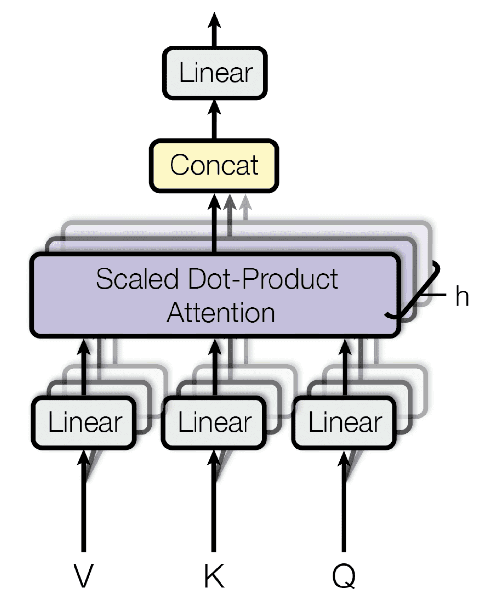
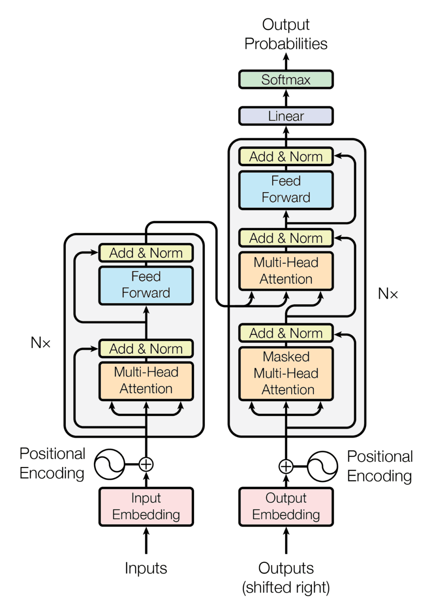

What is attention?
Attention is roughly defined as an overall alertness of the context or ability to engage with surroundings. For example our eyesight is a great embodiment of an attention mechanism. We don't process what we see piece by piece (pixel by pixel); we focus on salient features to grasp the global meaning of what we see. So the question is: is there a way for machines to also focus on the important parts instead of processing everything?
The main paper we are going to talk about is "Attention is all you need" (Vaswani et al., 2017) which had an encoder–decoder model architecture. It basically permits the decoder to pay more attention to important parts in an input sequence (text, pixels, anything really). The primary task the paper and its related work focused on was machine translation. The ability to translate our thoughts to break the language barrier is something people forget nowadays but it is such a game changer for many occasions. Funny how a solution for one task can be applied to many other tasks and change the world.
But before explaining that paper let us review the original attention mechanism (Bahdanau et al., 2014). The problem they tried to solve was that no matter the length of the input sequence, all its information had to fit in a single vector of fixed size. This is problematic because the model often lost important details with longer sequences. Especially with older models like RNN-based ones, a common problem was losing the older context.
So to solve this they introduced attention which works in the following steps:
1. Alignment score
$$ e_{t,i} = a(s_{t-1}, h_i) $$
where
\(a(\cdot)\) = alignment score function (a small feed‑forward network) that scores how well decoder state \(s_{t-1}\) matches encoder state \(h_i\).
\(s_{t-1}\) = the previous decoder state (what has been generated so far).
\(h_i\) = the encoder hidden state at input position \(i\) (a vector representing the \(i\)‑th input token).
So the alignment score basically indicates how well each input word matches with what the decoder wants to generate next. For example, in machine translation, if the decoder is about to produce "apple," higher scores will land on source tokens related to "apple."
2. Weights
$$\alpha_{t,i} = \text{softmax}(e_{t,i})$$
With this we normalize the alignment score with the softmax function over \(i\) (the input positions) for each decoding step \(t\). This way the attention weights range from 0 to 1 and each row sums up to 1. In human language: it tells us how much attention the model puts on each input token at this step.
3. Context vector
$$c_t = \sum_{i=1}^T \alpha_{t,i} \, h_i$$
Then like we said we want to represent the context of the input as a vector with important parts weighted by the attention scores. So we do that by taking the weighted average of all encoder hidden states. A "hidden state" is the encoder's vector representation for each input token.
In short, attention lets the decoder dynamically focus on different parts of the input at each step, instead of encoding the whole sequence in a fixed-size vector with equal representation.
Now that we know the original version of attention which was the groundwork for Transformers, we will look into a more developed generalized version of the attention mechanism.
The general attention mechanism works in the following steps:
Why \(Q\), \(K\), \(V\)? We separate what we are looking for from how to match and what to retrieve:
Q = Query, what we are currently focusing on (the "question" in a retrieving task)
K = Keys, what each input item means or represents (titles, tags in a retrieving task)
V = Values, the actual content or information stored for each input item (documents)
1. Alignment score
$$e_{q,k_i} = q \cdot k_i$$
Here, \(q\) is the current query vector (e.g., a token representation) and \(k_i\) is the key vector at input position \(i\). This compares the query with every key.
2. Weights
$$\alpha_{q,k_i} = \text{softmax}(e_{q,k_i})$$
We normalize the scores over \(i\) so the weights are comparable and sum to 1. This makes them an interpretable distribution of how much to attend to each position.
3. Combine values
$$\text{Attention}(q,K,V) = \sum_i \alpha_{q,k_i} \, v_i$$
Combine the weights with the value vectors: we take a weighted sum of the value vectors \(v_i\) using the attention weights. Intuitively, each value vector is multiplied by its corresponding attention weight and then summed.
Let's see attention in action with code
import numpy as np
random_seed = 25
np.random.seed(random_seed)
# Let us define some inputs
input_1 = np.array([1, 0, 0])
input_2 = np.array([0, 1, 0])
input_3 = np.array([1, 1, 0])
input_4 = np.array([0, 0, 1])
inputs = np.array([input_1, input_2, input_3, input_4]) # shape: (4, 3)
# Initialize the weight matrices
W_Q = np.random.randn(3, 3)
W_K = np.random.randn(3, 3)
W_V = np.random.randn(3, 3)
# Compute query, key and value for each input
Q = inputs @ W_Q
K = inputs @ W_K
V = inputs @ W_V
# Score the query against key vectors
scores = Q @ K.T # shape: (4, 4)
# Apply softmax with scaling for stability
def softmax(x, axis=None):
x = x - np.max(x, axis=axis, keepdims=True)
exp_x = np.exp(x)
return exp_x / np.sum(exp_x, axis=axis, keepdims=True)
weights = softmax(scores / K.shape[1] ** 0.5, axis=1)
# Compute the weighted sum of value vectors
attention_output = weights @ V
print(attention_output)Self-Attention and Multi-Head Attention
Before Transformers changed the world, RNN-based architectures like LSTMs were the standard. The "Attention Is All You Need" paper (Vaswani et al., 2017) argued that self-attention was the better approach, hence the name.
What is self-attention? It's the attention mechanism applied to the same sequence to see which parts of the sequence are important. When applied to different sequences, it's called cross-attention. At its core, attention is a mapping between a query and a set of key-value pairs to an output.
The Transformer architecture has two key building blocks:
- Scaled dot-product attention
- Multi-head attention
Scaled Dot-Product Attention
$$\text{Attention}(Q,K,V) = \text{softmax}\!\left(\frac{QK^\intercal}{\sqrt{d_k}}\right) V \in \mathbb{R}^{m \times d_v}$$
This looks similar to what we discussed before, but with an important twist. The \(\sqrt{d_k}\) scaling factor prevents vanishing gradients as the dimensionality grows. Why this specific form? As dot-product magnitudes grow roughly as \(\sqrt{d_k}\), we scale by that to stabilize training.
Unlike earlier additive attention, this uses dot products (\(QK^\intercal\)), which makes it computationally more efficient and easier to parallelize.
Dimensions matter here:
- \(Q \in \mathbb{R}^{m \times d_k}\) — \(m\) queries, each with \(d_k\) features
- \(K \in \mathbb{R}^{n \times d_k}\) — \(n\) keys, each with \(d_k\) features
- \(V \in \mathbb{R}^{n \times d_v}\) — \(n\) values, each with \(d_v\) features
- Output: \(\mathbb{R}^{m \times d_v}\) — one value vector per query
When \(m = n\), we have self-attention (the sequence attends to itself). When \(m \neq n\), it's cross-attention (like encoder-decoder attention in translation).
Multi-Head Attention
Multi-head attention allows the model to look at the sequence from multiple perspectives simultaneously. Each head focuses on different relationships: one might look at semantic meaning, another at grammatical structure, another at position. It's like getting opinions from multiple experts.
Why parallelizable? Each head runs the scaled dot-product attention independently, then we concatenate all outputs and apply a linear projection to mix them together.
In practice: With 8 heads and \(d_v = 64\) per head, each head produces \(\mathbb{R}^{m \times 64}\). We concatenate these into \(\mathbb{R}^{m \times 64 \times 8}\), then project to the model dimension.
$$\text{MultiHead}(Q, K, V) = \text{Concat}(\text{head}_1, \ldots, \text{head}_h) W^O$$
where each head is:
$$\text{head}_i = \text{Attention}(QW_i^Q, KW_i^K, VW_i^V)$$
and \(W^O \in \mathbb{R}^{(h \times d_v) \times d_\text{model}}\) is the output projection matrix.
Transformer Architecture
Now we can finally look at the Transformer architecture! In short, Transformer consists of two main parts: encoder and decoder. The left side is the encoder, it maps an input sequence to continuous representations and then passes this to the decoder. The decoder (right side) generates an output sequence, using both the encoder's output and the previously decoded output from earlier time steps.
Both encoder and decoder have \(N\) layers built sequentially: layer 1's output goes to layer 2, and so on. Layer \(N\)'s output is the final output from each part.
Encoder
First, it's important to know that Transformer has no built-in way to understand position in an input sequence, since it doesn't use recurrence or convolution. But positional understanding is crucial, so they add positional encodings before feeding data into the encoder (or decoder).
The first sublayer is multi-head self-attention, which we explained earlier. This lets the model know which parts of the sequence are more important. Then it goes through a Fully Connected Feed-Forward Network (FFN), which is just two linear layers with a ReLU activation:
$$\text{FFN}(x) = \text{ReLU}(W_1 x + b_1)W_2 + b_2$$
(Note: each layer has different parameters, of course.)
We also see residual connections (the input is added to the output of each sublayer) to prevent the deep network from forgetting or distorting the original sequence as it goes through many layers. We also use Layer Normalization for numerical stability.
Decoder
The decoder is similar to the encoder but with an additional sublayer at the beginning. As input, it takes the output from the previous time step (what has been generated so far). Important: at the first step, it hasn't generated anything yet, so we add a special token like BOS (beginning of sentence) to handle this edge case.
The first sublayer is masked multi-head attention. The mask ensures the model can only attend to previous positions—preventing it from "looking ahead" at future tokens during training. This makes the decoder autoregressive.
Then it has multi-head attention where \(Q\) comes from the decoder and \(K\), \(V\) come from the encoder output. This is cross-attention: the decoder queries the encoder's representation to decide what to generate next.
The FC FFN adds non-linearity, enabling the model to learn complex patterns from the data.
Why \(N\) layers? Because it's simple yet powerful. More layers means more parameters and a heavier model, prone to overfitting. \(N=6\) was the original choice that balanced complexity and performance.
Building a Transformer in PyTorch
Now that we understand each component, let's implement a simple Transformer model:
import torch
import torch.nn as nn
class EncoderLayer(nn.Module):
def __init__(self, d_model, num_heads, d_ff):
super().__init__()
self.attention = nn.MultiheadAttention(d_model, num_heads, batch_first=True)
self.feed_forward = nn.Sequential(
nn.Linear(d_model, d_ff),
nn.ReLU(),
nn.Linear(d_ff, d_model)
)
self.norm1 = nn.LayerNorm(d_model)
self.norm2 = nn.LayerNorm(d_model)
def forward(self, x):
# Self-attention with residual connection
attn_output, _ = self.attention(x, x, x)
x = self.norm1(attn_output + x)
# Feed-forward with residual connection
ff_output = self.feed_forward(x)
x = self.norm2(ff_output + x)
return x
class Encoder(nn.Module):
def __init__(self, num_layers, d_model, num_heads, d_ff):
super().__init__()
self.layers = nn.ModuleList([EncoderLayer(d_model, num_heads, d_ff)
for _ in range(num_layers)])
def forward(self, x):
for layer in self.layers:
x = layer(x)
return x
class DecoderLayer(nn.Module):
def __init__(self, d_model, num_heads, d_ff):
super().__init__()
self.masked_attention = nn.MultiheadAttention(d_model, num_heads, batch_first=True)
self.attention = nn.MultiheadAttention(d_model, num_heads, batch_first=True)
self.feed_forward = nn.Sequential(
nn.Linear(d_model, d_ff),
nn.ReLU(),
nn.Linear(d_ff, d_model)
)
self.norm1 = nn.LayerNorm(d_model)
self.norm2 = nn.LayerNorm(d_model)
self.norm3 = nn.LayerNorm(d_model)
def forward(self, x, encoder_output, mask=None):
# Masked self-attention (prevents looking ahead)
attn_output, _ = self.masked_attention(x, x, x, attn_mask=mask)
x = self.norm1(attn_output + x)
# Cross-attention: query from decoder, key/value from encoder
attn_output, _ = self.attention(x, encoder_output, encoder_output)
x = self.norm2(attn_output + x)
# Feed-forward
ff_output = self.feed_forward(x)
x = self.norm3(ff_output + x)
return x
class Decoder(nn.Module):
def __init__(self, num_layers, d_model, num_heads, d_ff):
super().__init__()
self.layers = nn.ModuleList([DecoderLayer(d_model, num_heads, d_ff)
for _ in range(num_layers)])
def forward(self, x, encoder_output, mask=None):
for layer in self.layers:
x = layer(x, encoder_output, mask)
return x
class Transformer(nn.Module):
def __init__(self, num_layers, d_model, num_heads, d_ff, d_vocab):
super().__init__()
self.encoder = Encoder(num_layers, d_model, num_heads, d_ff)
self.decoder = Decoder(num_layers, d_model, num_heads, d_ff)
self.projection = nn.Linear(d_model, d_vocab)
def forward(self, encoder_input, decoder_input):
encoder_output = self.encoder(encoder_input)
decoder_output = self.decoder(decoder_input, encoder_output)
return self.projection(decoder_output)
# Create a demo model
num_layers = 2 # Reduced for demo
d_model = 128
num_heads = 4
d_ff = 512
d_vocab = 1000
model = Transformer(num_layers, d_model, num_heads, d_ff, d_vocab)
# Example inputs
batch_size = 2
seq_len = 10
encoder_input = torch.randn(batch_size, seq_len, d_model)
decoder_input = torch.randn(batch_size, seq_len, d_model)
# Forward pass
output = model(encoder_input, decoder_input)
print(f"Input shape: encoder={encoder_input.shape}, decoder={decoder_input.shape}")
print(f"Output shape: {output.shape}")
print(f"Number of parameters: {sum(p.numel() for p in model.parameters()):,}")
print("voila! We made a 1M parameter language model!")Conclusion
We've covered the fundamentals of attention mechanisms and Transformers—from the original attention mechanism to scaled dot-product attention, multi-head attention, and the full Transformer architecture. We even built a working 1M parameter model in PyTorch!
This architecture revolutionized NLP and beyond. Modern models like GPT, BERT, and many computer vision models are all based on these principles. Understanding these fundamentals is key to grasping how today's AI systems work.
If you want to dive deeper, I highly recommend reading the original paper "Attention Is All You Need" (Vaswani et al., 2017) and experimenting with the code.